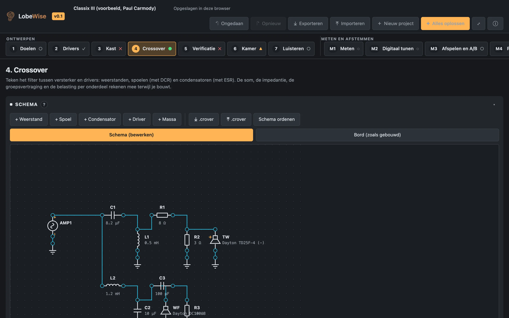
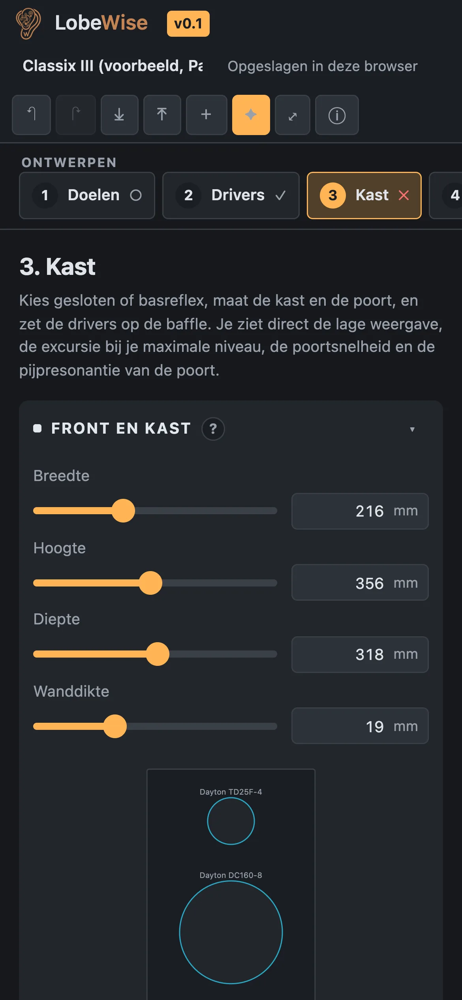
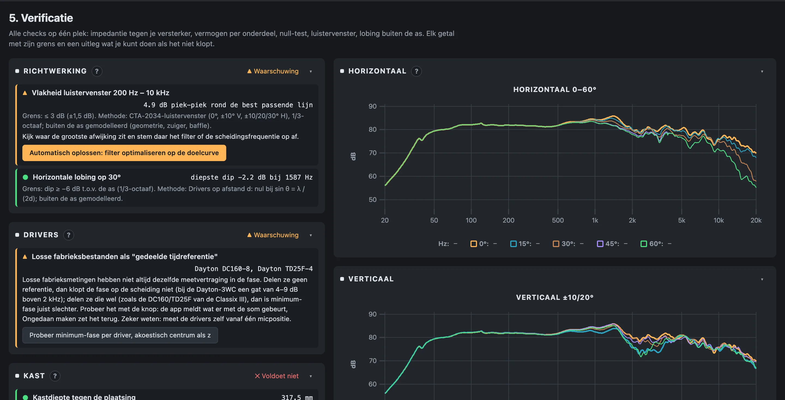
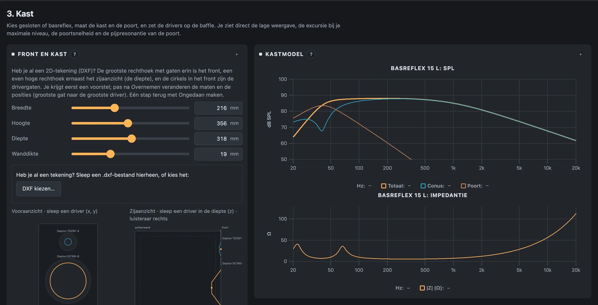
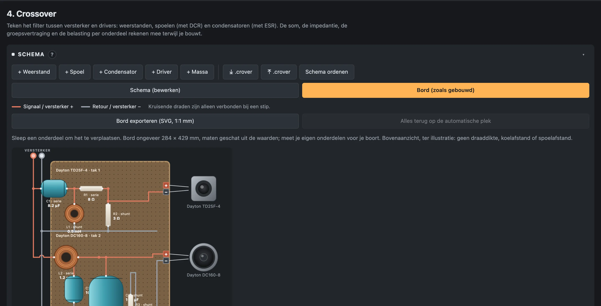
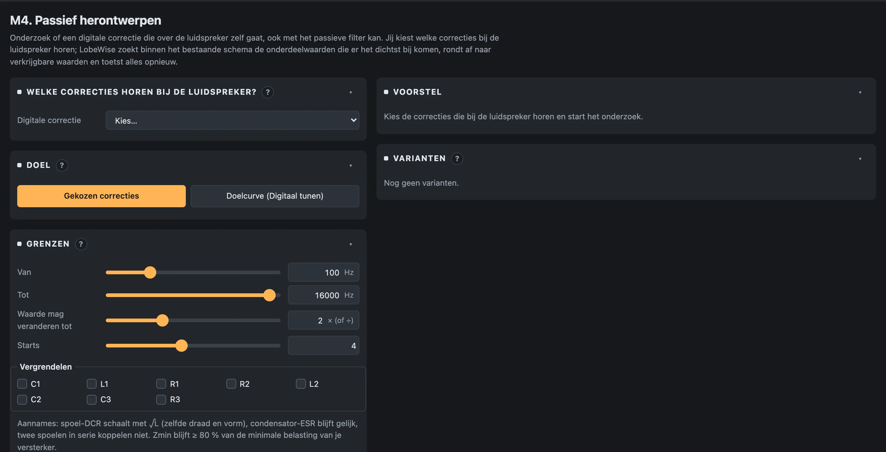

Real circuit solver
Nodal analysis of your actual schematic: coils with DCR, capacitors with ESR, inverted drivers, measured impedance. Zmin, EPDR and the load on every part at your amplifier's clip level.
Audiophile Simulation Suite · runs in your browser
From driver files to a crossover you can build, a cabinet that behaves and a room you can actually hear — every step with pass/fail checks and a plain-language explanation. No install, no account, no password. Your data never leaves your device.


Validated against published builds — Paul Carmody's Classix III and Troels Gravesen's Dayton-3WC sum within 1 dB of the designers' own measurements — and against an independent Python reference for every solver.
Why LobeWise
Crossover, cabinet, directivity, room and listening share one project and one physics core — so a change in the cabinet shows up in the impedance, the lobing and the room response at once.
Nodal analysis of your actual schematic: coils with DCR, capacitors with ESR, inverted drivers, measured impedance. Zmin, EPDR and the load on every part at your amplifier's clip level.
Sealed, vented, aperiodic, passive radiator, bandpass, transmission line and horn. Port velocity, pipe resonance, cone excursion against Xmax, wall thickness and baffle diffraction per driver position.
CTA-2034 listening window, horizontal and vertical polars, lobing between drivers, spinorama and the Olive preference score — from geometry you drag on the baffle.
Image-source reflections, room modes below Schroeder, SBIR and floor bounce. Then listen on headphones: direct sound, each wall on or off, A/B between two designs.
Each check explains its limit and its method, and offers a button. “Solve everything” tries every fix, re-checks the whole project after each one and keeps only what makes the total better — one undo step.
A board view drawn as built, realistic part sizes, SVG at 1:1 mm, a bill of materials, .crover export and a build pack with the netlist and driver files.
Sweep, deconvolution, gating, calibration files and REW import. Compare the measurement with the prediction, tune digitally, then turn the correction into passive parts.
Everything runs in your browser. Projects are saved locally and exported as readable JSON. No account, no password, no upload, no tracking. Pro unlocks with a licence key you receive by e-mail.
Verification
Impedance against your amplifier, part loads for sine and music, listening-window flatness, lobing at 30°, tweeter resonance distance — one table, six statuses, nothing hidden behind a score.

Cabinet
The front view, the box model, the port and the excursion respond live. Seven enclosure types share one acoustic model, so switching from vented to aperiodic is one click, not a new project.

Board view
Shunt chains to ground, series parts along the signal path, driver terminals on the edge. Drag parts, export the board at 1:1 and measure your own components before you drill.

How it works
Speaker type, placement, listening distance, max SPL, amplifier. These become the limits of every check.
Drop FRD/ZMA files, pick from the library or enter Thiele/Small. Maker headers are recognised.
Box, port, driver positions, wall thickness. Excursion, port speed and diffraction update live.
Draw the filter, start from a template or import .crover. Sum, impedance, group delay, part loads.
All checks in one table, with directivity, lobing and the listening window.
Place speakers and seat, choose materials, see reflections, modes and SBIR.
Headphone auralisation from the same simulation. Walls on/off, A/B, guided listening tests.
Pro Measure & tune track
The second track takes a built speaker back into the model. Measure it with your own microphone, correct it digitally while you listen, then let LobeWise find the passive parts that do the same job — and verify the result with a control measurement.
Device check with a low test tone, sweep, deconvolution, gating, mic calibration, REW import, absolute SPL.
Target curve, parametric EQ, bounded autotune. One filter definition drives the chart and the playback.
Your own music, level-matched A/B between variants, clip and headroom meter, smooth parameter changes.
Optimiser inside your existing topology, realistic losses, E-series rounding, EPDR before/after — as a variant you can build and measure again.

Compared
Good separate tools exist for each job. What they cannot do is tell each other when something changed.
Pricing
€0
Everything you need to design a speaker.
Most complete
€9 / month / year
For people who build, measure and iterate.
Pro launches soon. Waitlist members get the first month free.
FAQ
Yes. The solvers, the audio engine and the storage are all client-side. Projects live in your browser's storage and are exported as plain JSON. There is no server to send anything to.
FRD and ZMA driver files (manufacturer or your own), REW exports, .crover projects, microphone calibration files, and WAV/MP3/FLAC music for listening. Everything can be exported again.
Every solver is tested against an independent Python reference and the suite has 283 automated tests. Two published designs, Classix III and Dayton-3WC, sum within about 1 dB of the designers' measurements. Where the model stops, a check says “outside model” instead of guessing.
Free covers the full design flow up to verification with one project. Pro adds the room and listening steps, the measure-and-tune track, the optimiser and “Solve everything”, spinorama and tolerances, unlimited projects and build-pack export.
Pro is a monthly or yearly subscription you can cancel at any time. Payment runs through Stripe, which also handles invoices and cancelling. Your projects remain yours and stay exportable, also after cancelling. Payment opens together with Pro; the waitlist is free.
With a licence key. After payment you receive a signed key by e-mail, valid for the paid period. Paste it once into LobeWise: the app checks the signature on your device, without contacting a server, and switches Pro on. Each renewal sends a fresh key automatically. There is no password and nothing to log in to; the key also works offline and on your other devices.
Pro stays active until the end of the paid period, then the Pro steps lock again. Everything you made stays: projects, measurements and variants remain on your device and exportable, and the design steps keep working for free. Because there is no cloud, there is nothing to delete and nothing to sync.
Not for designing. For the measure-and-tune track any USB or calibrated measurement mic works; calibration files are supported. The app never routes a microphone to your speakers.